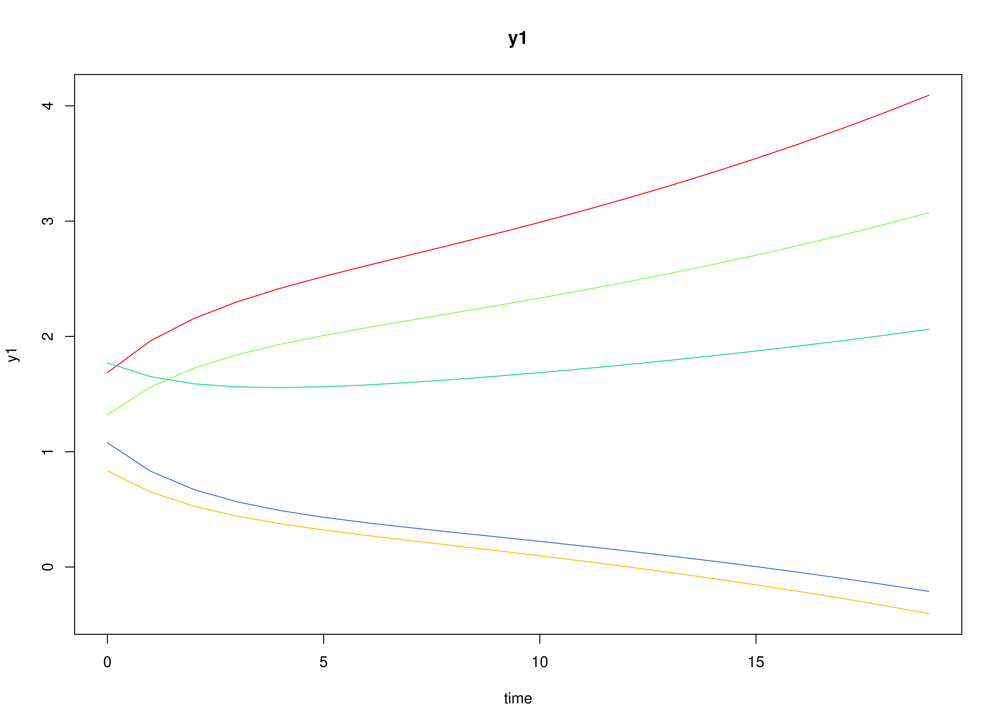
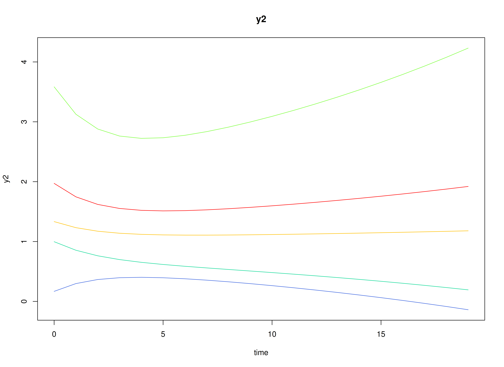

Fit the Discrete-Time Vector Autoregressive Model By ID (Escalating Co-Activation)
Ivan Jacob Agaloos Pesigan
2025-10-14
Source:vignettes/escalating-co-activation.Rmd
escalating-co-activation.RmdDynamics Description
The Escalating Co-Activation process represents a bivariate dynamic system in which two latent constructs—such as stress and rumination—mutually reinforce each other over time. Both constructs display strong autoregressive effects, indicating persistence, and positive cross-effects, suggesting that increases in one tend to amplify the other in subsequent time points.
At the population level, this pattern yields a slow return to equilibrium and, in some cases, near-unstable trajectories that can produce sustained co-activation or escalation. Between-person variability in the transition parameters captures individual differences in the strength of this self-reinforcing loop. The process noise covariance is relatively large and positively correlated, representing shared perturbations that drive both variables upward, while measurement error variance is moderate, reflecting realistic self-report imprecision.
This configuration models a vicious cycle dynamic—common in maladaptive emotional or cognitive processes—where mutual amplification between system components (e.g., stress and rumination) can sustain or exacerbate dysregulation over time.
Model
The measurement model is given by where , , and are random variables and , , and are model parameters. represents a vector of observed random variables, a vector of latent random variables, and a vector of random measurement errors, at time and individual . denotes a matrix of factor loadings, and the covariance matrix of for individual . In this model, is an identity matrix and is a symmetric matrix.
The dynamic structure is given by where , , and are random variables, and , and are model parameters. Here, is a vector of latent variables at time and individual , represents a vector of latent variables at time and individual , and represents a vector of dynamic noise at time and individual . is a matrix of autoregression and cross regression coefficients for individual , and the covariance matrix of for individual . In this model, is a symmetric matrix.
Data Generation
Notation
Let be the number of time points and be the number of individuals.
Let the measurement model intecept vector be normally distributed with the following means
and covariance matrix
Let the factor loadings matrix be given by
Let the measurement error covariance matrix be given by
Let the initial condition be given by
and are functions of and .
Let the transition matrix be normally distributed with the following means
and covariance matrix
Let the intercept vector be fixed to a zero vector.
The SimNuN and SimBetaN functions from the
simStateSpace package generates random intercept vectors
and transition matrices from the multivariate normal distribution. Note
that the SimBetaN function generates transition matrices
that are weakly stationary with an option to set lower and upper
bounds.
Let the dynamic process noise be given by
R Function Arguments
n
#> [1] 100
time
#> [1] 10100
burnin
#> [1] 10000
# first mu0 in the list of length n
mu0[[1]]
#> [1] 0 0
# first sigma0 in the list of length n
sigma0[[1]]
#> [,1] [,2]
#> [1,] 0.4390926 0.2988029
#> [2,] 0.2988029 0.7801401
# first sigma0_l in the list of length n
sigma0_l[[1]] # sigma0_l <- t(chol(sigma0))
#> [,1] [,2]
#> [1,] 0.6626406 0.0000000
#> [2,] 0.4509276 0.7594764
alpha
#> [[1]]
#> [1] 0 0
# first beta in the list of length n
beta[[1]]
#> [,1] [,2]
#> [1,] 0.3978376 0.06747857
#> [2,] -0.1527304 0.74955797
# first psi in the list of length n
psi[[1]]
#> [,1] [,2]
#> [1,] 0.35 0.2
#> [2,] 0.20 0.4
psi_l[[1]] # psi_l <- t(chol(psi))
#> [,1] [,2]
#> [1,] 0.5916080 0.0000000
#> [2,] 0.3380617 0.5345225
# first nu in the list of length n
nu[[1]]
#> [1] 1.002238 1.395981
lambda
#> [[1]]
#> [,1] [,2]
#> [1,] 1 0
#> [2,] 0 1
# first theta in the list of length n
theta[[1]]
#> [,1] [,2]
#> [1,] 0.20 0.05
#> [2,] 0.05 0.20
theta_l[[1]] # theta_l <- t(chol(theta))
#> [,1] [,2]
#> [1,] 0.4472136 0.0000000
#> [2,] 0.1118034 0.4330127Visualizing the Dynamics Without Process Noise and Measurement Error (n = 5 with Different Initial Condition)

Using the SimSSMIVary Function from the
simStateSpace Package to Simulate Data
library(simStateSpace)
sim <- SimSSMIVary(
n = n,
time = time,
mu0 = mu0,
sigma0_l = sigma0_l,
alpha = alpha,
beta = beta,
psi_l = psi_l,
nu = nu,
lambda = lambda,
theta_l = theta_l
)
data <- as.data.frame(sim, burnin = burnin)
head(data)
#> id time y1 y2
#> 1 1 0 1.8008626 2.6491957
#> 2 1 1 0.8995021 0.9101415
#> 3 1 2 1.6510854 1.7182646
#> 4 1 3 2.1157005 2.0501781
#> 5 1 4 0.1607911 1.3959618
#> 6 1 5 1.9171924 1.4944638
plot(sim, burnin = burnin)

Model Fitting
The FitDTVARMxID function fits a DT-VAR model on each
individual
.
To set up the estimation, we first provide starting
values for each parameter matrix.
Autoregressive Parameters (beta)
The autoregressive coefficient matrix is given starting values.
beta_values <- betaLDL′-parameterized covariance matrices
Covariances such as psi and theta are
estimated using the LDL′ decomposition of a positive definite covariance
matrix. The decomposition expresses a covariance matrix
as
where:
-
is a strictly lower-triangular matrix of free parameters
(
l_mat_strict),
-
is the identity matrix,
-
is an unconstrained vector,
- ensures strictly positive diagonal entries.
The LDL() function extracts this decomposition from a
positive definite covariance matrix. It returns:
-
d_uc: unconstrained diagonal parameters, equal toInvSoftplus(d_vec),
-
d_vec: diagonal entries, equal toSoftplus(d_uc),
-
l_mat_strict: the strictly lower-triangular factor.
sigma <- matrix(
data = c(1.0, 0.5, 0.5, 1.0),
nrow = 2,
ncol = 2
)
ldl_sigma <- LDL(sigma)
d_uc <- ldl_sigma$d_uc
l_mat_strict <- ldl_sigma$l_mat_strict
I <- diag(2)
sigma_reconstructed <- (l_mat_strict + I) %*% diag(log1p(exp(d_uc)), 2) %*% t(l_mat_strict + I)
sigma_reconstructed
#> [,1] [,2]
#> [1,] 1.0 0.5
#> [2,] 0.5 1.0Process Noise Covariance Matrix (psi)
Starting values for the process noise covariance matrix are given below, with corresponding LDL′ parameters.
psi_values <- psi[[1]]
ldl_psi_values <- LDL(psi_values)
psi_d_values <- ldl_psi_values$d_uc
psi_l_values <- ldl_psi_values$l_mat_strict
psi_d_values
#> [1] -0.8697232 -1.1065068
psi_l_values
#> [,1] [,2]
#> [1,] 0.0000000 0
#> [2,] 0.5714286 0Measurement Error Covariance Matrix (theta)
Starting values for the measurement error covariance matrix are given below, with corresponding LDL′ parameters.
theta_values <- theta[[1]]
ldl_theta_values <- LDL(theta_values)
theta_d_values <- ldl_theta_values$d_uc
theta_d_values
#> [1] -1.507772 -1.578762
theta_l_values <- ldl_theta_values$l_mat_strictInitial mean vector (mu_0) and covariance matrix
(sigma_0)
The initial mean vector
and covariance matrix
are fixed using mu0 and sigma0.
mu0_values <- mu0
FitDTVARMxID
fit <- FitDTVARMxID(
data = data,
observed = c("y1", "y2"),
id = "id",
beta_values = beta_values,
psi_d_values = psi_d_values,
psi_l_values = psi_l_values,
nu_values = nu_values,
theta_diag = FALSE,
theta_d_values = theta_d_values,
theta_l_values = theta_l_values,
mu0_values = mu0_values,
sigma0_d_values = sigma0_d_values,
sigma0_l_values = sigma0_l_values,
prefix = "escalating",
quiet = TRUE,
ncores = parallel::detectCores()
)Parameter estimates
summary(fit)
#> beta_1_1 beta_2_1 beta_1_2 beta_2_2
#> escalating_DTVAR_ID1.Rds 0.24406880 -0.3574313101 0.055643699 0.8916749
#> escalating_DTVAR_ID2.Rds 0.12956367 -0.2896849954 0.219676729 0.9891764
#> escalating_DTVAR_ID3.Rds 0.83604043 0.0601422330 0.025928380 0.5398158
#> escalating_DTVAR_ID4.Rds 0.61590268 0.0860676996 -0.005537616 0.7420925
#> escalating_DTVAR_ID5.Rds 0.54592684 0.0975287900 0.415573807 0.8444367
#> escalating_DTVAR_ID6.Rds 0.75227882 0.4291141251 0.044503678 0.6039494
#> escalating_DTVAR_ID7.Rds 1.09657699 0.5991582929 -0.203854110 0.4519403
#> escalating_DTVAR_ID8.Rds 0.80946351 -0.0578677411 -0.025363302 0.3788042
#> escalating_DTVAR_ID9.Rds 0.23550665 -0.1705311236 -0.065869468 0.7474840
#> escalating_DTVAR_ID10.Rds 0.08561154 -0.8290796721 0.724564127 1.6338129
#> escalating_DTVAR_ID11.Rds 0.56511439 0.4157862726 0.087391173 0.6864071
#> escalating_DTVAR_ID12.Rds 0.59228460 -0.2897932318 0.100589183 0.9040288
#> escalating_DTVAR_ID13.Rds 0.80883941 -0.0380462979 0.275096527 1.0013393
#> escalating_DTVAR_ID14.Rds 0.51849212 -0.3627647810 0.270655611 1.1818302
#> escalating_DTVAR_ID15.Rds 0.81200739 0.0430830975 0.280308970 0.6099679
#> escalating_DTVAR_ID16.Rds 0.55251201 -0.0642902590 -0.335975637 0.3878252
#> escalating_DTVAR_ID17.Rds 0.80212767 0.0246068399 0.295414479 0.8782838
#> escalating_DTVAR_ID18.Rds 0.24402705 -0.1325273219 0.679812632 1.0198365
#> escalating_DTVAR_ID19.Rds 0.62711217 -0.0617836632 0.328405303 0.5201000
#> escalating_DTVAR_ID20.Rds 0.73874423 0.0812443271 0.199368701 0.5729847
#> escalating_DTVAR_ID21.Rds 0.54038801 -0.1359486931 0.106822459 0.5172624
#> escalating_DTVAR_ID22.Rds 0.70970103 0.2456374316 0.020522031 0.3493822
#> escalating_DTVAR_ID23.Rds 0.37735067 -0.1388699131 0.081278513 0.4097305
#> escalating_DTVAR_ID24.Rds 0.39336814 0.1692118876 -0.135972251 0.3100261
#> escalating_DTVAR_ID25.Rds 0.38785424 -0.1829597937 0.410230026 1.0847753
#> escalating_DTVAR_ID26.Rds 0.88857448 -0.0311957081 0.534339385 0.7832480
#> escalating_DTVAR_ID27.Rds 0.83177599 -0.2695539680 0.350148630 0.9826903
#> escalating_DTVAR_ID28.Rds 0.64422421 -0.1803711747 0.078146251 0.5203722
#> escalating_DTVAR_ID29.Rds 0.80432218 0.1693629589 0.124285425 0.6395785
#> escalating_DTVAR_ID30.Rds 0.31240075 0.2891071337 0.064574552 0.6175704
#> escalating_DTVAR_ID31.Rds 0.82579750 0.0826761808 -0.043506608 0.6162779
#> escalating_DTVAR_ID32.Rds 0.87686213 0.0854316246 -0.023506073 0.3275524
#> escalating_DTVAR_ID33.Rds 0.72431846 0.0576631422 -0.233340069 0.3149469
#> escalating_DTVAR_ID34.Rds 1.09423992 0.5249177470 -0.215401294 0.6171180
#> escalating_DTVAR_ID35.Rds 0.36992811 -0.3434629730 0.435260264 0.8744486
#> escalating_DTVAR_ID36.Rds 0.50409560 -0.0798916270 0.011169822 0.7232057
#> escalating_DTVAR_ID37.Rds 0.54733087 -0.0364377080 0.225536876 0.7530498
#> escalating_DTVAR_ID38.Rds 0.83712738 -0.1754499220 0.023814195 1.0119912
#> escalating_DTVAR_ID39.Rds 0.73929608 -0.4352304366 0.097921134 0.6784025
#> escalating_DTVAR_ID40.Rds 0.78337261 0.0802788953 -0.150193853 0.7058236
#> escalating_DTVAR_ID41.Rds 0.75771913 -0.0248306262 0.449406328 0.7509639
#> escalating_DTVAR_ID42.Rds 0.99571219 0.1209124153 -0.538054587 0.3354773
#> escalating_DTVAR_ID43.Rds 0.80562062 -0.2230755020 0.170568634 0.6311152
#> escalating_DTVAR_ID44.Rds 0.17259954 -0.1446013472 1.636990187 1.2009122
#> escalating_DTVAR_ID45.Rds 0.62918897 0.1537134382 0.457542233 0.6843251
#> escalating_DTVAR_ID46.Rds 0.33477868 0.0169610977 0.282509052 0.5962160
#> escalating_DTVAR_ID47.Rds 0.90878068 0.1329879148 0.096852401 0.3357924
#> escalating_DTVAR_ID49.Rds 0.50544466 0.1048581436 -0.289134710 0.7636260
#> escalating_DTVAR_ID50.Rds 0.91458492 0.3891002116 -0.068091367 0.7119492
#> escalating_DTVAR_ID51.Rds 0.18862696 -0.2038647543 0.668359243 1.1101411
#> escalating_DTVAR_ID52.Rds 0.59329580 -0.0463159810 -0.002323317 0.3241389
#> escalating_DTVAR_ID53.Rds 0.70507544 -0.2018612208 0.373191457 0.8998103
#> escalating_DTVAR_ID54.Rds 0.88187819 -0.0001984602 -0.214808711 0.3342347
#> escalating_DTVAR_ID55.Rds 0.95793296 0.1620879990 -0.658960514 0.2466391
#> escalating_DTVAR_ID56.Rds 0.33238348 -0.1208532844 0.025644342 0.7668189
#> escalating_DTVAR_ID57.Rds 0.60766936 -0.1112954882 0.138773429 0.8645987
#> escalating_DTVAR_ID58.Rds 0.55170333 0.1651658843 0.080390274 0.6807677
#> escalating_DTVAR_ID59.Rds 0.36478709 -0.1670744978 0.105413721 0.8346253
#> escalating_DTVAR_ID60.Rds 0.48019811 0.0512419765 0.052432454 0.9302916
#> escalating_DTVAR_ID61.Rds 0.59061106 -0.1389054670 -0.071524390 0.5873176
#> escalating_DTVAR_ID62.Rds 1.02994801 0.3905025400 -0.068815778 0.7253273
#> escalating_DTVAR_ID63.Rds 0.84393185 0.0229069596 -0.203707258 0.5612388
#> escalating_DTVAR_ID64.Rds 0.88543905 0.1898344780 0.031750010 0.7890376
#> escalating_DTVAR_ID65.Rds 0.64336276 0.0725521356 0.249654932 0.7914937
#> escalating_DTVAR_ID66.Rds 0.78430767 -0.0178903166 0.360934026 0.7431350
#> escalating_DTVAR_ID67.Rds 0.70287263 -0.0284484405 0.116981154 0.8163523
#> escalating_DTVAR_ID69.Rds 0.49983750 -0.3085472666 0.068803788 0.7061349
#> escalating_DTVAR_ID70.Rds 1.00492915 0.3638337363 -0.179822895 0.6765213
#> escalating_DTVAR_ID71.Rds 0.79125937 -0.0086383470 0.164306780 0.8920671
#> escalating_DTVAR_ID72.Rds 0.73028902 -0.0738424076 0.321501416 0.9741851
#> escalating_DTVAR_ID73.Rds 0.80966875 0.1005747420 0.142501217 0.8942604
#> escalating_DTVAR_ID74.Rds 0.60461646 0.0770483568 0.260197643 0.2341332
#> escalating_DTVAR_ID75.Rds 0.54645137 -0.0818628192 0.227624286 0.7744048
#> escalating_DTVAR_ID76.Rds 0.70834572 0.0007852613 0.055302500 0.5357304
#> escalating_DTVAR_ID77.Rds 1.56734984 0.7117034637 -1.916191457 -0.9928975
#> escalating_DTVAR_ID78.Rds 0.34104204 0.0292288047 0.387095238 0.9165412
#> escalating_DTVAR_ID79.Rds 0.47969076 -0.0847862079 0.368817631 0.7103366
#> escalating_DTVAR_ID80.Rds 0.71190511 -0.1251406325 0.156616957 0.6376829
#> escalating_DTVAR_ID81.Rds 0.69615918 0.5247588894 -0.067488992 0.6852307
#> escalating_DTVAR_ID82.Rds 0.68543480 0.3442255720 0.075150133 0.4600372
#> escalating_DTVAR_ID83.Rds 0.30859615 0.1609793209 0.219329525 0.4135244
#> escalating_DTVAR_ID84.Rds 0.51571494 0.0789694958 0.053492703 0.7728061
#> escalating_DTVAR_ID85.Rds 0.34513137 0.2793556893 0.107130490 0.4699799
#> escalating_DTVAR_ID86.Rds 0.91933912 -0.0943956426 0.283207124 0.8707444
#> escalating_DTVAR_ID87.Rds 0.63865465 0.1039881833 0.256912779 0.5876338
#> escalating_DTVAR_ID88.Rds 0.89621427 0.5162374876 -0.181600931 0.8663691
#> escalating_DTVAR_ID89.Rds 0.40077687 0.0693809526 0.033699847 0.4109871
#> escalating_DTVAR_ID90.Rds 0.79917552 -0.0800860584 0.100195110 0.5144645
#> escalating_DTVAR_ID91.Rds 1.14090142 0.3364825142 -0.381121836 0.5269791
#> escalating_DTVAR_ID92.Rds 1.30178686 1.4605234080 -0.176844378 0.3758584
#> escalating_DTVAR_ID93.Rds 1.14294177 0.4144310865 -0.175182902 0.5947912
#> escalating_DTVAR_ID94.Rds 0.86423785 0.5070180308 -0.061243528 0.6062723
#> escalating_DTVAR_ID95.Rds 0.72094807 -0.2155711705 0.220748566 0.9901672
#> escalating_DTVAR_ID96.Rds 0.14322751 -0.7785789187 0.554332105 1.4442629
#> escalating_DTVAR_ID97.Rds 0.76722436 -0.0368144530 0.148929762 0.8490871
#> escalating_DTVAR_ID99.Rds 0.53446304 -0.0924329553 0.180157437 0.9463808
#> escalating_DTVAR_ID100.Rds 0.78422844 0.3429641449 0.007418848 0.2853537
#> nu_1_1 nu_2_1 psi_l_2_1 psi_d_1_1
#> escalating_DTVAR_ID1.Rds 1.18719073 1.44612507 0.5839926095 -0.738601141
#> escalating_DTVAR_ID2.Rds 0.44896790 0.75424205 0.5010422185 -0.412626582
#> escalating_DTVAR_ID3.Rds 1.83114942 1.58830838 0.3945717482 -1.156180628
#> escalating_DTVAR_ID4.Rds 0.99515362 0.72267154 1.0908972105 -1.286791478
#> escalating_DTVAR_ID5.Rds -0.09490408 0.46769317 -0.0067280160 -0.859456938
#> escalating_DTVAR_ID6.Rds 0.26461256 0.20997808 0.3274503897 -0.651802014
#> escalating_DTVAR_ID7.Rds 1.33774875 0.90223238 0.4043550881 -1.582674520
#> escalating_DTVAR_ID8.Rds 0.61125741 0.79214958 0.8327608664 -1.649507934
#> escalating_DTVAR_ID9.Rds 0.92799809 0.85443619 0.4685928133 -0.211962541
#> escalating_DTVAR_ID10.Rds 1.05121312 0.91836383 0.6458913988 -1.128429133
#> escalating_DTVAR_ID11.Rds 0.98375405 0.33492329 0.6208839159 -0.948974633
#> escalating_DTVAR_ID12.Rds 0.15952234 0.39842070 0.8584458878 -0.695104832
#> escalating_DTVAR_ID13.Rds -0.03019636 0.32503809 0.2789164634 -0.483266455
#> escalating_DTVAR_ID14.Rds 0.13773648 0.07150641 0.9443953657 -1.024767703
#> escalating_DTVAR_ID15.Rds 0.19954191 0.28718287 0.8178140700 -0.684272703
#> escalating_DTVAR_ID16.Rds 0.81046597 0.74234913 0.3430853988 -0.246194059
#> escalating_DTVAR_ID17.Rds 2.37565248 1.67157311 0.7518565068 -0.943377882
#> escalating_DTVAR_ID18.Rds 1.42789027 1.14095180 0.3270307176 -0.318401422
#> escalating_DTVAR_ID19.Rds 1.64583685 0.95233261 0.2525898005 -0.758634130
#> escalating_DTVAR_ID20.Rds 0.74401309 0.68395116 0.7881875441 -2.030460538
#> escalating_DTVAR_ID21.Rds 0.41888586 1.07597122 0.7466158875 -0.665764470
#> escalating_DTVAR_ID22.Rds 0.35929806 0.25002712 0.6209133813 -0.336719231
#> escalating_DTVAR_ID23.Rds 0.46759170 0.12692496 0.6138330233 -1.047071579
#> escalating_DTVAR_ID24.Rds 0.36279656 0.42375738 0.7074903144 -0.781561876
#> escalating_DTVAR_ID25.Rds 0.98615826 1.32589439 0.5964067262 -0.440077052
#> escalating_DTVAR_ID26.Rds 1.77032469 1.16585805 0.7026866518 -1.464288320
#> escalating_DTVAR_ID27.Rds 0.01551742 -0.24737402 0.0736924900 -1.720798768
#> escalating_DTVAR_ID28.Rds 1.03217120 1.00664633 0.9175284654 -1.085121735
#> escalating_DTVAR_ID29.Rds 0.12052317 0.27346278 0.5929387851 -0.973393538
#> escalating_DTVAR_ID30.Rds 0.96861800 1.01960052 0.2566130932 -0.476958764
#> escalating_DTVAR_ID31.Rds 0.83936792 0.55392502 0.6298355072 -0.572412433
#> escalating_DTVAR_ID32.Rds 0.66320025 1.05488140 0.9714726024 -1.436688610
#> escalating_DTVAR_ID33.Rds 0.93054932 0.80884621 0.9006750051 -0.457909737
#> escalating_DTVAR_ID34.Rds 1.13031921 0.51586391 0.6111564369 -2.399890731
#> escalating_DTVAR_ID35.Rds 1.70445593 1.74058499 1.0439271299 -1.350288787
#> escalating_DTVAR_ID36.Rds 0.53279418 0.84899194 0.4331197185 -0.311731406
#> escalating_DTVAR_ID37.Rds 0.65992670 1.52463589 0.3145367331 -0.005100735
#> escalating_DTVAR_ID38.Rds 1.43616583 3.61446563 0.6402478709 -2.252749685
#> escalating_DTVAR_ID39.Rds 1.29195401 1.26619582 1.3249803257 -1.415097563
#> escalating_DTVAR_ID40.Rds 1.46891084 0.89405136 0.9771175798 -0.560789652
#> escalating_DTVAR_ID41.Rds 0.30603660 0.47172265 0.6327040901 -0.287296432
#> escalating_DTVAR_ID42.Rds 1.05733019 1.61911628 1.3830669100 -0.924655142
#> escalating_DTVAR_ID43.Rds 1.74074259 0.62975648 0.5477592505 -1.328040126
#> escalating_DTVAR_ID44.Rds 2.08981120 2.06112270 0.2824687995 -0.965557953
#> escalating_DTVAR_ID45.Rds 1.98859448 1.19179411 0.1263520523 -1.316958079
#> escalating_DTVAR_ID46.Rds 0.61327491 0.39380272 -0.0271416747 -0.443251544
#> escalating_DTVAR_ID47.Rds 1.35960804 1.03561864 0.3796474227 -1.118242048
#> escalating_DTVAR_ID49.Rds 0.42663323 -0.51809753 2.5266721276 -2.163556710
#> escalating_DTVAR_ID50.Rds 1.53471303 1.42164651 0.6571501070 -1.652029773
#> escalating_DTVAR_ID51.Rds 0.81647963 1.38492744 0.2612753122 -0.466516515
#> escalating_DTVAR_ID52.Rds 1.59662291 1.14093446 0.4489004133 -0.196523848
#> escalating_DTVAR_ID53.Rds 0.11288838 0.60125288 0.3778612129 -1.344346925
#> escalating_DTVAR_ID54.Rds 0.57475408 0.90316891 0.8132937914 -0.663814101
#> escalating_DTVAR_ID55.Rds 1.16343232 0.98911128 0.7731751391 -0.531057043
#> escalating_DTVAR_ID56.Rds -0.12539837 -0.32921902 0.4689033194 -0.310769096
#> escalating_DTVAR_ID57.Rds 0.44312903 1.17021449 0.4198097453 -0.800247274
#> escalating_DTVAR_ID58.Rds 1.31953954 1.61880535 0.4684944377 -0.564313653
#> escalating_DTVAR_ID59.Rds 0.60981821 0.49070756 0.6640161485 -0.420450562
#> escalating_DTVAR_ID60.Rds 0.43362784 -0.03227648 0.4397966739 -0.530826998
#> escalating_DTVAR_ID61.Rds 1.18228857 0.53580593 0.6084127661 -0.330726631
#> escalating_DTVAR_ID62.Rds 0.65632997 0.78335612 0.3478736933 -1.238473579
#> escalating_DTVAR_ID63.Rds 1.23975394 0.94449348 0.8022473883 -1.368212342
#> escalating_DTVAR_ID64.Rds 0.08575246 0.06653849 0.1278410579 -0.815632050
#> escalating_DTVAR_ID65.Rds 1.28692788 1.35938126 0.4579030798 -0.028145569
#> escalating_DTVAR_ID66.Rds 2.01733289 1.46249311 0.2782603871 -1.004430530
#> escalating_DTVAR_ID67.Rds 0.90339687 1.45253059 0.7754323097 -1.434232857
#> escalating_DTVAR_ID69.Rds 1.29708219 1.74496795 0.9544340604 -0.736860549
#> escalating_DTVAR_ID70.Rds 1.29774976 1.97796897 1.3320424982 -1.332073935
#> escalating_DTVAR_ID71.Rds -0.08457494 0.06706740 0.7053377802 -1.104938269
#> escalating_DTVAR_ID72.Rds 0.02864218 0.49971640 1.0912782414 -1.656452384
#> escalating_DTVAR_ID73.Rds -1.13038284 -1.48543094 0.6226486193 -0.625154302
#> escalating_DTVAR_ID74.Rds 1.37280585 1.52938371 0.0007361924 -0.820528322
#> escalating_DTVAR_ID75.Rds 0.54687902 0.38522239 0.7006071228 -1.009622949
#> escalating_DTVAR_ID76.Rds 1.05370782 1.40520259 1.0418460112 -1.162543984
#> escalating_DTVAR_ID77.Rds 0.71961390 0.94454598 0.5529044975 -0.856296732
#> escalating_DTVAR_ID78.Rds 0.78493447 0.39816704 0.3324531720 -0.572419006
#> escalating_DTVAR_ID79.Rds 1.04216627 1.30143123 0.2257717812 -0.725216031
#> escalating_DTVAR_ID80.Rds 2.73505063 2.02987563 0.7790507179 -0.454090937
#> escalating_DTVAR_ID81.Rds 1.37650245 1.69151647 0.8187385910 -1.238774421
#> escalating_DTVAR_ID82.Rds 1.62853841 1.90661377 0.1784724578 -0.789622475
#> escalating_DTVAR_ID83.Rds 0.22674002 1.06573744 0.4474348147 -0.356145122
#> escalating_DTVAR_ID84.Rds 1.38373118 1.14544007 1.2848618123 -1.242774811
#> escalating_DTVAR_ID85.Rds 0.48168170 0.77163923 0.3775188964 -0.492918702
#> escalating_DTVAR_ID86.Rds 0.85826695 1.16854597 0.5550219319 -1.228973646
#> escalating_DTVAR_ID87.Rds 0.79041212 0.80783598 0.4376601698 -0.187052550
#> escalating_DTVAR_ID88.Rds 1.46532468 2.22828440 0.2219883237 -1.987776318
#> escalating_DTVAR_ID89.Rds 0.69740965 0.63264548 0.5590326980 -0.820970433
#> escalating_DTVAR_ID90.Rds 1.28102046 0.93294193 1.0446591605 -0.542458270
#> escalating_DTVAR_ID91.Rds 0.57832630 0.55717427 0.5859218349 -0.656243352
#> escalating_DTVAR_ID92.Rds 1.95526233 1.97589441 0.2418844876 -3.710885389
#> escalating_DTVAR_ID93.Rds 0.20258886 0.57041476 1.1946858025 -1.367215659
#> escalating_DTVAR_ID94.Rds 2.54855321 1.85113359 0.3953409148 -1.972083277
#> escalating_DTVAR_ID95.Rds 0.55406606 0.77491857 0.9344357554 -2.025952222
#> escalating_DTVAR_ID96.Rds 0.23691504 0.25762068 1.2306772579 -2.319543370
#> escalating_DTVAR_ID97.Rds 0.74559091 0.63494856 0.9531747595 -0.886695543
#> escalating_DTVAR_ID99.Rds 1.49717245 1.52056746 0.5359078481 -0.483925632
#> escalating_DTVAR_ID100.Rds 0.89903060 0.96229727 0.6331730158 -0.737691165
#> psi_d_2_1 theta_l_2_1 theta_d_1_1 theta_d_2_1
#> escalating_DTVAR_ID1.Rds -1.9193426 -0.12867445 -2.1613269 -1.4296628
#> escalating_DTVAR_ID2.Rds -0.8808170 -2.19843730 -3.3923579 -17.5383054
#> escalating_DTVAR_ID3.Rds -0.5420306 0.15650302 -1.7217144 -2.8430807
#> escalating_DTVAR_ID4.Rds -1.3269012 -0.23483988 -1.1499707 -22.2642013
#> escalating_DTVAR_ID5.Rds -1.0888403 1.32784794 -1.6617625 -5.6940635
#> escalating_DTVAR_ID6.Rds -0.7632552 0.10381259 -2.8136548 -2.5919495
#> escalating_DTVAR_ID7.Rds -2.0963500 0.34125672 -0.9950257 -1.1896953
#> escalating_DTVAR_ID8.Rds -1.4795782 0.25301789 -1.2590763 -1.5767484
#> escalating_DTVAR_ID9.Rds -2.2701744 -10.05249027 -6.4638844 -21.2195980
#> escalating_DTVAR_ID10.Rds -23.8239179 -0.03281045 -1.8208510 -0.8823922
#> escalating_DTVAR_ID11.Rds -1.5342674 0.43305646 -1.4278530 -1.6967345
#> escalating_DTVAR_ID12.Rds -2.2041176 -0.64969605 -1.7287909 -1.8077239
#> escalating_DTVAR_ID13.Rds -1.7666341 0.51989812 -2.7007216 -0.8703120
#> escalating_DTVAR_ID14.Rds -22.2063858 -0.10699546 -1.1365922 -1.2097068
#> escalating_DTVAR_ID15.Rds -1.5550809 -0.24781026 -1.1193121 -2.4433463
#> escalating_DTVAR_ID16.Rds -1.2034886 1.07624768 -21.8615032 -1.9048855
#> escalating_DTVAR_ID17.Rds -1.4404071 0.04443498 -1.3210226 -1.4849360
#> escalating_DTVAR_ID18.Rds -2.7190117 4.84102413 -4.0507016 -18.2589907
#> escalating_DTVAR_ID19.Rds -0.5257830 0.66623595 -2.3165855 -21.6747349
#> escalating_DTVAR_ID20.Rds -0.9829495 0.35933447 -0.9354907 -21.2169322
#> escalating_DTVAR_ID21.Rds -0.7324837 -0.36095293 -1.6717280 -21.3460797
#> escalating_DTVAR_ID22.Rds -0.6817934 -0.66534179 -2.8998762 -19.5022142
#> escalating_DTVAR_ID23.Rds -0.4739980 0.09311189 -1.8802271 -20.0665679
#> escalating_DTVAR_ID24.Rds -1.6189903 -0.25071523 -1.2290176 -3.0838242
#> escalating_DTVAR_ID25.Rds -1.0895496 -1.40826494 -3.0567588 -19.9392368
#> escalating_DTVAR_ID26.Rds -1.6020209 0.03939887 -1.4686362 -1.4990771
#> escalating_DTVAR_ID27.Rds -2.7306880 0.49264931 -1.1302631 -1.6158648
#> escalating_DTVAR_ID28.Rds -0.4799604 -0.06740831 -1.2694364 -20.5988231
#> escalating_DTVAR_ID29.Rds -0.7724267 0.17431192 -1.6585082 -2.2185444
#> escalating_DTVAR_ID30.Rds -0.1412549 -5.85998200 -20.3393090 -29.9352646
#> escalating_DTVAR_ID31.Rds -0.8901279 -0.21848886 -1.6707343 -1.7958743
#> escalating_DTVAR_ID32.Rds -0.7814483 0.01814213 -1.1052230 -20.4442973
#> escalating_DTVAR_ID33.Rds -1.3070823 0.02061130 -1.2183810 -21.1362977
#> escalating_DTVAR_ID34.Rds -1.5222163 0.29389664 -0.7113946 -1.8627903
#> escalating_DTVAR_ID35.Rds -1.7896380 0.19421466 -1.2508739 -1.5038465
#> escalating_DTVAR_ID36.Rds -1.4620907 0.35550055 -2.5134079 -1.2155455
#> escalating_DTVAR_ID37.Rds -0.8528631 1.00363382 -2.3466931 -2.3513735
#> escalating_DTVAR_ID38.Rds -1.4584043 0.30982022 -0.9489454 -1.2540778
#> escalating_DTVAR_ID39.Rds -1.1991624 -0.08664265 -0.9333899 -3.6193978
#> escalating_DTVAR_ID40.Rds -1.4793799 -1.14415183 -2.2182329 -21.0647755
#> escalating_DTVAR_ID41.Rds -1.8253866 -0.13093634 -2.1525256 -1.3818293
#> escalating_DTVAR_ID42.Rds -23.3529940 -0.34669485 -0.8940034 -29.7055520
#> escalating_DTVAR_ID43.Rds -1.4992046 0.49901965 -1.6031003 -1.2609395
#> escalating_DTVAR_ID44.Rds -3.1246290 0.66502515 -1.9739048 -0.8964506
#> escalating_DTVAR_ID45.Rds -1.5261597 0.48879090 -1.0065517 -1.3001342
#> escalating_DTVAR_ID46.Rds -1.3752260 3.04452256 -3.1961968 -16.8558715
#> escalating_DTVAR_ID47.Rds -0.4074529 0.14938796 -1.5451679 -2.3756782
#> escalating_DTVAR_ID49.Rds -20.8131021 -0.06555340 -0.9874093 -18.8125160
#> escalating_DTVAR_ID50.Rds -1.4245526 0.15698549 -0.8302182 -1.2922563
#> escalating_DTVAR_ID51.Rds -1.5539513 -5.54658646 -6.2352534 -1.2931379
#> escalating_DTVAR_ID52.Rds -0.9225424 -0.15541008 -2.0628734 -2.5815294
#> escalating_DTVAR_ID53.Rds -2.1135518 0.60918876 -1.2872934 -0.8871645
#> escalating_DTVAR_ID54.Rds -1.0256765 -0.07148155 -1.8749918 -20.5000030
#> escalating_DTVAR_ID55.Rds -2.2521109 -0.86668551 -2.1764666 -19.2275680
#> escalating_DTVAR_ID56.Rds -1.3748621 0.08872768 -20.3533030 -1.3327809
#> escalating_DTVAR_ID57.Rds -2.2708385 0.12211212 -2.0920085 -1.3579945
#> escalating_DTVAR_ID58.Rds -1.5776222 0.25897668 -3.2161331 -0.9659263
#> escalating_DTVAR_ID59.Rds -2.2894055 -2.13037052 -3.1144787 -19.1388969
#> escalating_DTVAR_ID60.Rds -1.7459634 1.14919700 -18.4328584 -1.1712150
#> escalating_DTVAR_ID61.Rds -1.9918309 -0.06370541 -2.2184992 -0.9524941
#> escalating_DTVAR_ID62.Rds -0.2907073 0.62253290 -1.5499766 -21.1408859
#> escalating_DTVAR_ID63.Rds -2.3165274 0.30936388 -1.1915688 -0.9139037
#> escalating_DTVAR_ID64.Rds -1.6062832 0.64978319 -1.4187168 -1.6265015
#> escalating_DTVAR_ID65.Rds -1.1030514 2.04340111 -3.1283961 -3.0959067
#> escalating_DTVAR_ID66.Rds -1.7333834 0.47994609 -1.0714418 -1.2162994
#> escalating_DTVAR_ID67.Rds -1.7479196 0.32273126 -1.0659685 -1.3500352
#> escalating_DTVAR_ID69.Rds -1.2830285 -0.44035259 -1.7256017 -19.4173658
#> escalating_DTVAR_ID70.Rds -2.5791169 -0.37838436 -1.6517381 -1.6213480
#> escalating_DTVAR_ID71.Rds -2.1476704 0.71585209 -2.3759824 -1.1989012
#> escalating_DTVAR_ID72.Rds -23.4786201 0.09784380 -0.9406184 -1.1350774
#> escalating_DTVAR_ID73.Rds -1.9168331 -0.13610991 -1.9803828 -1.4798614
#> escalating_DTVAR_ID74.Rds -1.4577269 1.43341460 -1.5147512 -19.9294561
#> escalating_DTVAR_ID75.Rds -0.6008676 0.02475948 -1.5609967 -5.1236148
#> escalating_DTVAR_ID76.Rds -1.0233007 -0.17245074 -1.1739894 -18.2512490
#> escalating_DTVAR_ID77.Rds -4.2413355 -2.32659446 -2.8538414 -18.0086883
#> escalating_DTVAR_ID78.Rds -0.6530376 1.22377525 -1.9191800 -20.1620742
#> escalating_DTVAR_ID79.Rds -1.2935041 0.46791782 -1.7545809 -1.0717555
#> escalating_DTVAR_ID80.Rds -0.3081393 -0.04417627 -2.2424378 -20.1213852
#> escalating_DTVAR_ID81.Rds -1.5358131 0.24493438 -1.5730448 -2.2474311
#> escalating_DTVAR_ID82.Rds -0.4753150 0.62223515 -1.8558276 -20.1911327
#> escalating_DTVAR_ID83.Rds -0.5099025 -1.84130023 -3.7622475 -19.3265716
#> escalating_DTVAR_ID84.Rds -1.6917571 -0.21720629 -0.9778911 -2.6256544
#> escalating_DTVAR_ID85.Rds -1.2166384 2.32526248 -3.2129799 -18.6583229
#> escalating_DTVAR_ID86.Rds -2.4823906 0.20643877 -1.6050071 -1.1087732
#> escalating_DTVAR_ID87.Rds -0.0691879 -0.25017583 -3.1090715 -20.6990534
#> escalating_DTVAR_ID88.Rds -4.6264869 0.67223109 -0.7058997 -0.8819184
#> escalating_DTVAR_ID89.Rds -0.9043924 -0.55092163 -1.9147625 -21.0071029
#> escalating_DTVAR_ID90.Rds -1.3406384 -0.44685839 -1.6296334 -18.9771741
#> escalating_DTVAR_ID91.Rds -3.3084558 0.25474466 -1.1471136 -0.7666933
#> escalating_DTVAR_ID92.Rds -21.7899223 0.36318782 -0.6462656 -0.6239468
#> escalating_DTVAR_ID93.Rds -0.6636842 -0.01591023 -0.7449914 -20.3688084
#> escalating_DTVAR_ID94.Rds -1.3997951 0.39586772 -1.0098554 -1.3210629
#> escalating_DTVAR_ID95.Rds -3.8520765 0.18658573 -0.9950746 -0.7166087
#> escalating_DTVAR_ID96.Rds -23.6420150 0.08001259 -0.6506852 -0.9166588
#> escalating_DTVAR_ID97.Rds -1.8177219 0.08289339 -1.5648490 -1.6154645
#> escalating_DTVAR_ID99.Rds -1.3648582 0.13009978 -1.8391561 -1.7508848
#> escalating_DTVAR_ID100.Rds -0.6280926 0.29195039 -1.2968363 -20.7398265Proportion of converged cases
converged(fit, prop = TRUE)
#> [1] 0.88